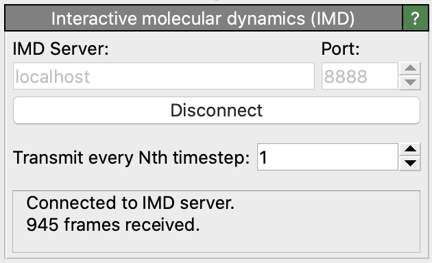
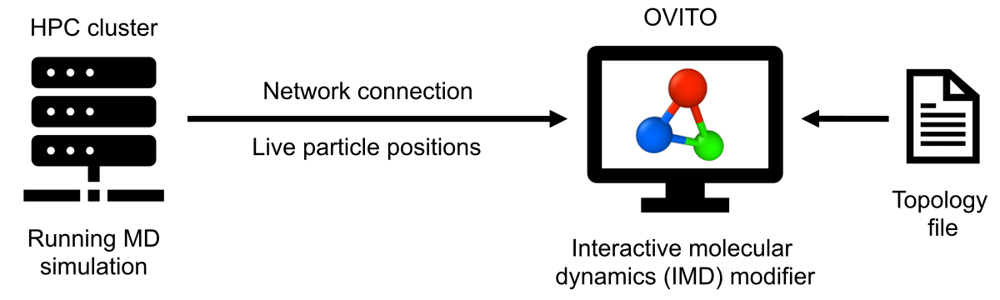

Interactive molecular dynamics (IMD)
{kind=link}
This modifier provides the ability to work with a molecular dynamics program running on another computer and display the results of a simulation as they are calculated. This technique was first introduced by the VMD visualization program and is referred to as Interactive Molecular Dynamics (IMD) by the authors.
This modifier merges the static topology information (e.g. atom types and bonds) loaded from an input file on the local computer with the live trajectory data received from the running molecular dynamics program, which is transmitted through a network connection:
{kind=link}
In order to run an IMD simulation it is necessary to have a molecular dynamics program that supports the IMD communication protocol. To date, the following simulation codes are available:
Follow the links to learn more about how to set up an IMD simulation in the molecular dynamics program.
Usage
Setting up an IMD session in OVITO involves the following steps:
Load an initial topology file into OVITO. In case of a LAMMPS MD simulation, for example, this would be a LAMMPS data file containing the list of atoms, their types, initial positions and bond information.
Insert the Interactive molecular dynamics (IMD) modifier into the data pipeline.
In the IMD modifier panel, enter the hostname of the computer the MD simulation program is running on (use “localhost” if the MD program runs on the same computer as OVITO). Also enter the network port number that has been set in the MD program. Finally, click the Connect button to establish a network connection to the running MD program.
Each time OVITO receives new particle positions from the MD program, it will refresh the interactive viewports. Note that the modifier will only cache the most recent particle coordinates received from the MD program. Previous frames of the live trajectory will be thrown away. The modifier lets you control the interval at which MD timesteps are transmitted by the MD program to OVITO. Note that, if timesteps arrive more frequently than OVITO is able to display them, the modifier may skip some frames. This may be the case if you insert additional modifiers into the data pipeline that take some time to compute.
The IMD protocol supports only MD simulations with a fixed number of particles. The storage order of particles must also be fixed, as the IMD protocol only transmits a raw list of particle coordinates but not the corresponding particle identifiers. It may thus be necessary to activate the option Sort particles by ID during import of the topology file into OVITO to ensure the local particle ordering is consistent with the ordering in the MD program.
Furthermore, note that the IMD protocol cannot transmit the current simulation box dimensions, and OVITO will use the constant simulation cell loaded from the topology file, even if the simulation cell geometry actually changes in the running MD simulation.